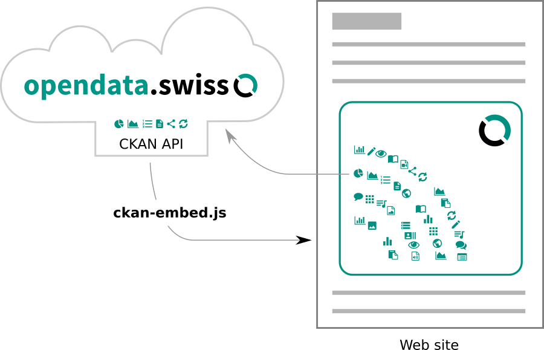
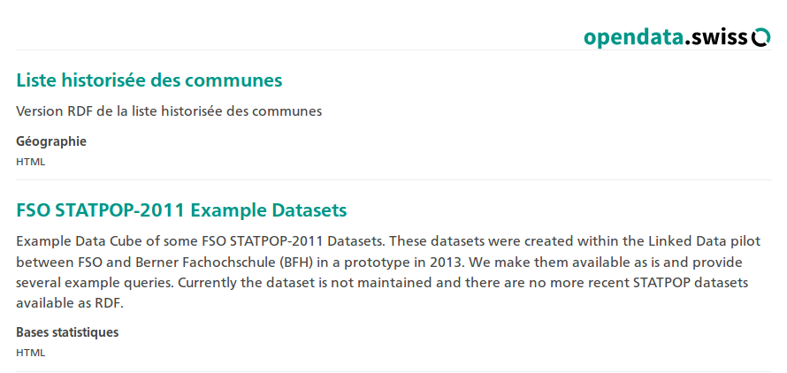
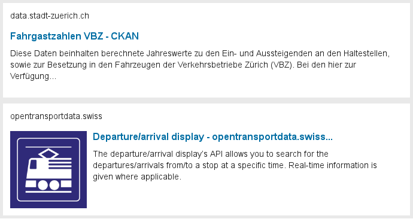

A range of technical options are described here for embedding content from the CKAN open data platform on third party websites. Some data publishers may like to present datasets they have published at opendata.swiss on their own website. Several of the publishing institutions even have data portals on which they may like to feature any datasets which they maintain on the central catalog, even integrating this with other information on the website.
Why embed data from the portal instead of copy-pasting or just linking?
- In order that datasets are well presented, their descriptions accurate and up-to-date.
- To show a dynamic selection from the catalog, based on a tag or search query, or even to show all datasets belonging to an organization.
We describe several options here - from linking to resources from the catalog, to embedding parts of the functionality from the portal on other websites. Our current recommendation at this time is to use the ckan-embed widget, which can be configured here.
Widget
Similar to the rich media widgets from Twitter and other websites, a script can be added to pages which loads remote content using JavaScript. It is possible to provide users with a code snippet that could be configured according to their needs. This provides a richer experience for users, but requires some technical knowledge of HTML, CSS and JavaScript.
The ckan.js project from Open Knowledge is a JavaScript library that can be used to connect to CKAN from within the browser. In order to overcome Cross-origin resource sharing (CORS) restrictions, a backend service would ideally be hosted on the same machine as the scripts. This could just be a proxy to the data portal.

We have developed a JavaScript widget based on ckan.js which displays the same information about datasets as the standard search. It uses the CKAN API to run search queries, and renders the result into the Web page. Our solution is similar to the CKAN Data Viewer, a feature that already has resource embedding built in, and the ability to white-list sites where this may be deployed using a resource proxy configuration option.
Note that due to lack of CORS support, we provided an option to use JSONP to mitigate cross-site scripting restrictions. JSONP is not recommended in current best practices in Web development, and we advise that - if possible - developers should put in place a proxy service, as described further down.
Here is an example of how a search result from opendata.swiss appears in this widget:

This is made by adding the following code to the page, for example to query the portal for "statistik" as a search term:
<div id="opendata-swiss">
Loading datasets ...
</div>
<script>
ck.datasets('#opendata-swiss', 'https://opendata.swiss/', 'statistik');
</script>
You may wish to link to the portal itself in the loading message, in case there are issues with connectivity or JavaScript in the browser.
It is also possible to use filter queries to limit results to a specific facets - such as group (groups:energy, for example), tags (tags:energie) or organization (organization:schweizerische-nationalbibliothek-nb). For example, this code fetches the top 3 datasets published by the National Library, linking to the german-language portal (lang:'de'):
ck.datasets('#opendata-swiss', 'https://opendata.swiss/', {
fq: 'organization:schweizerische-nationalbibliothek-nb',
lang: 'de',
rows: 3
});
In order to customize the presentation of the widget, you can use a custom template, for example like this code which fetches the most recently updated datasets:
ck.datasets('#ckanEmbed', 'https://opendata.swiss/de/', {
fq: ' ',
template: _.template(
'<div class="ckan-dataset">' +
'<a href="<%= ds.url %>"><h4 style="display:inline"><%= ds.title %></h4></a>' +
'<small class="ckan-fmt"> (<%= ds.formats.toUpperCase() %>)</small>' +
'<p><%= dso.publishers[0].label %></p>' +
'</div>'
),
rows: 5
});
Summary: we recommend the use of our JavaScript widget for embedding opendata.swiss datasets and search results. Full source code and deployment instructions are available on the ckan-embed project page.
Cards
It is possible to link directly to datasets and search results on opendata.swiss. For example:
- Link to a dataset:
https://opendata.swiss/en/dataset/verbreitung-der-steinbockkolonien - Link to a category (or group) page:
https://opendata.swiss/en/group/agriculture - Link to a datasets with one of the same tags:
https://opendata.swiss/en/dataset?keywords_en=ibex - Link to datasets from a specific organization:
https://opendata.swiss/en/organization/schweizerische-nationalbibliothek-nb - Link to a search result page:
https://opendata.swiss/en/dataset?q=ibex
Standards like the Open Graph protocol and oEmbed improve the way search engines and other machine 'users' access the platform, and also make it easy to bring in rich content from different sites through standard interfaces. Simply by pasting in the URL to a dataset on a platform with support for the protocol (like Discourse or Wordpress), visitors of your site see a "card" with the title and description and possibly an image of the page. If you see a plain link, then embedding is not supported or working - but visitors can still navigate to the target page.
Here is an example of how a dataset renders through Open Graph support from two CKAN portals when the links are posted in a Discourse forum:

This option would not allow search and other interactivity, but could provide a basis for it (further discussion in the next option). Initially, it would make it easy for content owners to use their own existing platforms to present the datasets in a nice way just by linking to the individual datasets.
There are various open-source packages and libraries you can use as a developer to add support for reading Open Graph metadata in your Web project. Here are some examples: pelican-open_graph (Pelican is used in this Handbook), opengraph by erikriver, Drupal, JavaScript/Node.js, and a middleware API at Opengraph.io.
Furthermore, category and search result pages could also be tagged using the same mechanisms, so third party websites get a summary view into the datasets simply by linking to the appropriate URL. For more in-depth discussion of metadata support see: Make consistent all forms of RDF output from CKAN #1890.
Summary: it is already possible to link directly to search pages and resources on opendata.swiss, however rich metadata in the page header is not yet supported. In a future release, pasting links from the portal into a Web platform that supports Web metadata protocols will enable a richer sharing experience. Until such time as Open Graph support is enabled on opendata.swiss, we recommend you to use the Widget option.
Frames
Using HTML IFRAMEs or EMBEDs, subsets or links from the portal can be placed directly into the page. It is actually essentially the same as if the user opens a link in a new tab, except the other web page is shown within a block on the current page, and scrolls along with the content.
However, this method is not recommended due to challenges from an accessibility and usability perspective:
- The portal has its own page branding and navigation which, when stuck inside of an frame, will have the unintended consequence of confusing the user about what is actually being presented.
- It is difficult to navigate with the keyboard into an IFRAME and visitors who rely on text-to-speech will be impeded, and will not meet full accessibility requirements.
- Due to the security measures of the browser, no communication can happen between the sites. It is possible to track users of the IFRAME through advanced web analytics, but only on the destination site - the host site will get no data on user behavior.
A possible compromise solution to the first two issues would be create an "embed view" template through a CKAN plugin which renders the requested page with alternative branding that is more conducive to usage in frames and reformatted content.
As a workaround in case our recommended option is not possible to implement, the IFRAME source could be used with an anchor that makes the view skip directly to content. For example, a search result (with #field-order-by anchor) or to a dataset page (#content anchor) would be embedded with code like this:
<iframe
width="100%" height="600" frameborder="0"
style="border:0;margin:0;padding:0"
src="https://opendata.swiss/en/dataset?q=RDF&res_format=HTML&sort=score+desc%2C+metadata_modified+desc#field-order-by"></iframe>
Summary: we do NOT RECOMMEND or support the use of IFRAMES, for reasons of poor accessibility and usability. However, if installing JavaScript is not possible, we have shown a basic workaround above.
Middleware
For the JavaScript widget solution described above, it would be helpful to monitor the API calls of the proxying server to specific calls for security and performance. An intermediate service backend that uses something like the Python ckanapi client could be used to facilitate this, or a load balancing server.
Open Graph support (as discussed in the Cards section) would make it possible to use a compatible client-side library (e.g.: Oembetter). Furthermore, soon on the opendata.swiss roadmap there will be support for requesting DCAT-AP compatible RDF for any dataset. While this does not mean that the data itself is linked, it would also allow a more generic solution to displaying the metadata.
Note that performance issues could potentially be compounded by availability and connectivity of the proxying server, so hosting this widget needs to be done with care. One straightforward option would be to add this functionality to CKAN itself, but there also may be reasons why platform owners may wish to separate the 'sharing' service from core functionality.
Further options
We investigated the possibility of supporting publishers of 'static sites', such as this handbook. The deployment of rich content could be extended with dynamic crawling and updating of content during the publication process without reliance on cross-site requests in the browser. This would however require technical effort for the specific publishing platforms, and come with the synchronicitiy issues of the Cards option - i.e. the embedded information will only be as recent as the latest publication. Such an approach is described in the govpack package.
Access to regular exports from the portal's underlying database - in other words, federated or raw data access - would enable content providers to run their own mini-sites synchronised to the central port. It is currently not clear how prominently portal federation will feature on CKAN's roadmap, while third party extensions like ckanext-odn-ic2pc-sync promise this kind of functionality. For a more high level discussion of the advantages of hosting federated platforms for data discovery, see Zhang Haojie et al., 2015.
Access to the metadata of the portal itself would be a sound option for the most technical users of the open data platform. They would however most likely need to host CKAN, or at least be familiar with its schema, to make use of such data. A compromise option, such as static snapshots of the API, could be another strategy to pursue in the future.
In the meantime, we recommend that opendata.swiss content is embedded externally using the JavaScript Widget.